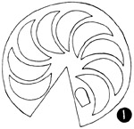
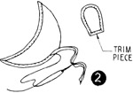
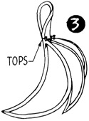
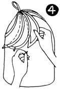
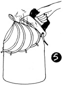
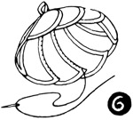

1952—How to Make Hats
by Ruby Carnahan
Crescent Felt Hat
REQUIREMENTS
- Large felt hood
- 7 yards of 1/4" braid
- 3/4 yard headband ribbon
Use pattern on page 71.
CUTTING PATTERN
Trace and cut out 9 crescent sections and mark top of each section like pattern. Cut out one piece of pattern trim.
CUTTING FELT
Cut one side of felt hood open from bottom to top, steam press felt hood flat as possible.
(Illus. 1) Arrange the 9 crescent pieces of pattern and one piece for trim on felt. Mark around pattern on felt (with tailor's chalk) and mark top of each crescent, and cut out felt on line.
SEWING AND BLOCKING FELT
(Illus. 2) Sew braid around curved side of each crescent, on both sides and around piece for trim.
(Illus. 3) Fold trim piece on line and pin top of each crescent piece to trim. Place on your correct Utility headsize block.
(Illus. 4) Fit, lap and pin each crescent section together evenly to fit block.
(Illus. 5) Steam and let dry on block.
(Illus. 6) Remove from block and sew each crescent section together on inside edge of braid.
FINISH HEADSIZE
Finish headsize with a swirled headband ribbon.